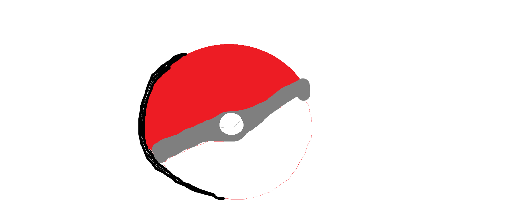

| La nueva edición de la saga ''spinoff'' de pokémon legends llega a nintendo Switch 1 & 2, y está mejor que nunca. Los personajes están super bien modelados, y por primera vez, puedes atrapar pokémon sin necesidad de entrar en combate con estos y atraparlos solo con el hecho de tirarles una bola desde atrás. Se basa en la historia de la ciudad de Lumiose en la región de Kalos, basada en París de Francia. Ha introducido la mecánica de trepara por los tejados de las casas y ''volar'' con tu propio móvil. VOLVER A PÁGINA PRINCIPAL |